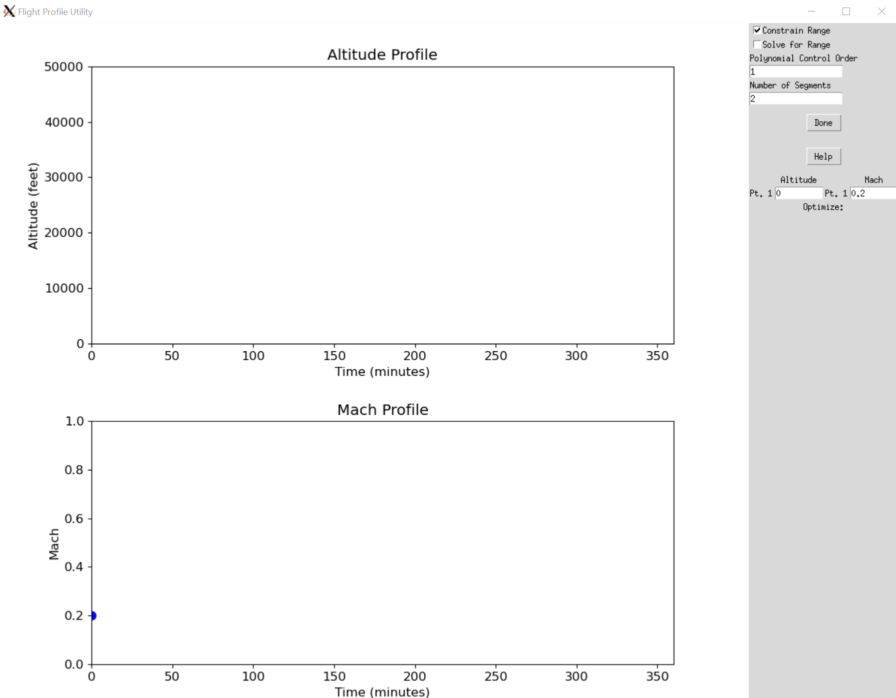
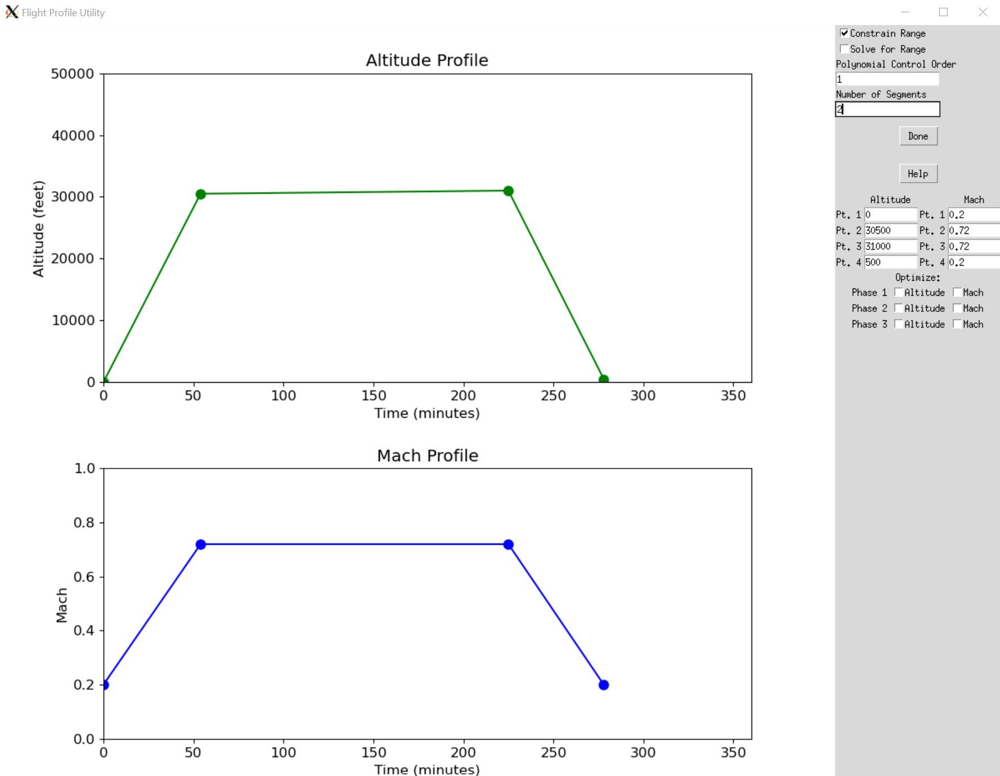
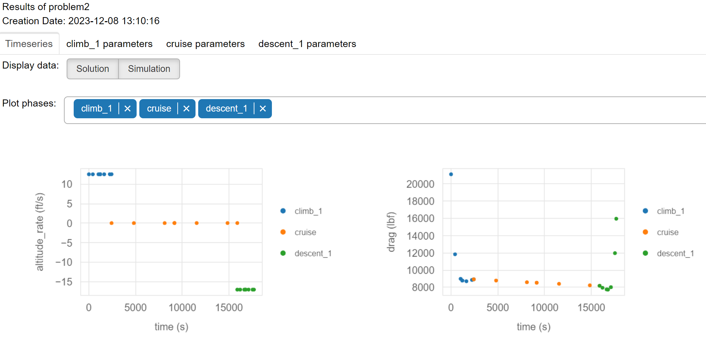

Conventional Aircraft and Simple Mission#
This is a simple example that explicitly shows all the steps needed to create and solve an Aviary optimization problem. We’ll be more verbose here than in other examples.
We’ll start with an existing aircraft .csv file and discuss some of what goes into that. Then we’ll define a mission together and explain how you’d modify it to suit your needs. Finally, we’ll call Aviary to solve the problem and look at the results.
How to define an aircraft#
Aircraft are defined in a .csv file with the following columns:
variable name: the name of the variable, following the Aviary variable naming convention
value: the user-defined value of the variable
units: the units of the variable
Let’s take a look at the first few lines of an example aircraft file, aircraft_for_bench_FwFm.csv.
This aircraft is a commercial single-aisle aircraft with two conventional turbofan engines.
Think of it in the same class as a Boeing 737 or Airbus A320.
Show code cell source
import aviary.api as av
filename = 'models/test_aircraft/aircraft_for_bench_FwFm.csv'
filename = av.get_path(filename)
with open(filename, 'r') as file:
for idx, line in enumerate(file):
print(line.strip('\n'))
if idx > 20:
break
/usr/share/miniconda/envs/test/lib/python3.12/site-packages/pyoptsparse/pyOpt_MPI.py:68: UserWarning: mpi4py could not be imported. mpi4py is required to use the parallel gradient analysis and parallel objective analysis for non-gradient based optimizers. Continuing using a dummy MPI module from pyOptSparse.
warnings.warn(warn)
/home/runner/work/om-Aviary/om-Aviary/aviary/subsystems/propulsion/engine_deck.py:198: UserWarning: <mission:summary:fuel_flow_scaler> is a required option for EngineDecks, but has not been specified for EngineDeck <engine>. The default value will be used.
warnings.warn(
aircraft:air_conditioning:mass_scaler,1.0,unitless
aircraft:anti_icing:mass_scaler,1.0,unitless
aircraft:apu:mass_scaler,1.1,unitless
aircraft:avionics:mass_scaler,1.2,unitless
aircraft:canard:area,0.0,ft**2
aircraft:canard:aspect_ratio,0.0,unitless
aircraft:canard:thickness_to_chord,0.0,unitless
aircraft:crew_and_payload:baggage_mass_per_passenger,45.0,lbm
aircraft:crew_and_payload:cargo_container_mass_scaler,1.0,unitless
aircraft:crew_and_payload:flight_crew_mass_scaler,1.0,unitless
aircraft:crew_and_payload:mass_per_passenger,180.0,lbm
aircraft:crew_and_payload:misc_cargo,0.0,lbm
aircraft:crew_and_payload:non_flight_crew_mass_scaler,1.0,unitless
aircraft:crew_and_payload:num_business_class,0,unitless
aircraft:crew_and_payload:num_first_class,11,unitless
aircraft:crew_and_payload:num_flight_attendants,3,unitless
aircraft:crew_and_payload:num_flight_crew,2,unitless
aircraft:crew_and_payload:num_galley_crew,0,unitless
aircraft:crew_and_payload:num_non_flight_crew,3,unitless
aircraft:crew_and_payload:num_passengers,169,unitless
aircraft:crew_and_payload:num_tourist_class,158,unitless
aircraft:crew_and_payload:passenger_service_mass_scaler,1.0,unitless
These are just some of the variables and values contained in the file. The full file defines everything we need to model an aircraft in Aviary, including bulk properties, wing and tail geometry, and engine and fuel system parameters.
Note
Depending on which settings you use to run Aviary, your aircraft definition might need specific variables to be defined. Please look at relevant examples to see what variables are needed.
For this example case, our model is using the simple mission method and FLOPS-based mass and aero estimation methods.
We strongly suggest using the simple mission method as it is the most robust and easiest to use.
There are relatively few reasons to use a more complex mission method and you should only do so if you have a particular reason to use a more detailed method.
How to define a mission#
We’ll now discuss how to define the mission that we want the aircraft to fly. We could do this a few different ways:
We could use the
default_simple_missionfile, which contains a default mission definition including climb, cruise, and descentWe could programmatically define the mission by defining a
phase_infodictionary that contains the mission phases and their definitionsWe could graphically define the mission using the
draw_missionAviary command
For this example, let’s use the graphical interface to define our mission. It’s the fastest method, is relatively intuitive, and results in generally less work for the user.
Drawing a mission profile#
To use the graphical interface, open a command prompt (terminal window) and run the following command:
aviary draw_mission
This will open a new window with two blank axes and some options and should look like this:

This application is documented in the drawing and running simple missions doc page. For now, we’ll define a relatively simple mission with three phases: climb, cruise, and descent. We’ve clicked around on our end to make a reasonable flight profile and it looks like this:

Feel free to draw your own flight profile or use the results of the one we’ve drawn here.
The rest of the example will use the flight profile shown above, but you can replace the phase_info dict with your own if you prefer.
Once we’re done running the GUI, we hit the Done button in the top right corner and we should see output that looks like this:
Total range is estimated to be 1915 nautical miles
reformatted /mnt/c/Users/user/Dropbox/git/Aviary/outputted_phase_info.py
All done! ✨ 🍰 ✨
1 file reformatted.
Phase info has been saved and formatted in /mnt/c/Users/user/Dropbox/git/Aviary/outputted_phase_info.py
If you don’t have the black python autoformatter installed, your output may look slightly different - as long as you see confirmation that your phase info has been saved, your mission profile was successfully created.
The phase_info dictionary has been saved to a file called outputted_phase_info.py in the current directory.
Let’s dig into it.
Examining the mission definition#
Opening the outputted_phase_info.py file, we see the entire phase_info dictionary that we just defined.
This is a verbose data object that exposes most of the mission definition parameters that Aviary uses.
We will not need to modify it for this example, but we are showing it here in its entirety so you can see some of the options that are available to control.
phase_info = {
"pre_mission": {"include_takeoff": False, "optimize_mass": True},
"climb_1": {
"subsystem_options": {"core_aerodynamics": {"method": "computed"}},
"user_options": {
"optimize_mach": False,
"optimize_altitude": False,
"polynomial_control_order": 1,
"num_segments": 2,
"order": 3,
"solve_for_distance": False,
"initial_mach": (0.2, "unitless"),
"final_mach": (0.72, "unitless"),
"mach_bounds": ((0.18, 0.74), "unitless"),
"initial_altitude": (0.0, "ft"),
"final_altitude": (30500.0, "ft"),
"altitude_bounds": ((0.0, 31000.0), "ft"),
"throttle_enforcement": "path_constraint",
"fix_initial": True,
"constrain_final": False,
"fix_duration": False,
"initial_bounds": ((0.0, 0.0), "min"),
"duration_bounds": ((27.0, 81.0), "min"),
},
"initial_guesses": {"times": ([0, 54], "min")},
},
"cruise": {
"subsystem_options": {"core_aerodynamics": {"method": "computed"}},
"user_options": {
"optimize_mach": False,
"optimize_altitude": False,
"polynomial_control_order": 1,
"num_segments": 2,
"order": 3,
"solve_for_distance": False,
"initial_mach": (0.72, "unitless"),
"final_mach": (0.72, "unitless"),
"mach_bounds": ((0.7, 0.74), "unitless"),
"initial_altitude": (30500.0, "ft"),
"final_altitude": (31000.0, "ft"),
"altitude_bounds": ((30000.0, 31500.0), "ft"),
"throttle_enforcement": "boundary_constraint",
"fix_initial": False,
"constrain_final": False,
"fix_duration": False,
"initial_bounds": ((27.0, 81.0), "min"),
"duration_bounds": ((85.5, 256.5), "min"),
},
"initial_guesses": {"times": ([54, 171], "min")},
},
"descent_1": {
"subsystem_options": {"core_aerodynamics": {"method": "computed"}},
"user_options": {
"optimize_mach": False,
"optimize_altitude": False,
"polynomial_control_order": 1,
"num_segments": 2,
"order": 3,
"solve_for_distance": False,
"initial_mach": (0.72, "unitless"),
"final_mach": (0.2, "unitless"),
"mach_bounds": ((0.18, 0.74), "unitless"),
"initial_altitude": (31000.0, "ft"),
"final_altitude": (500.0, "ft"),
"altitude_bounds": ((0.0, 31500.0), "ft"),
"throttle_enforcement": "path_constraint",
"fix_initial": False,
"constrain_final": True,
"fix_duration": False,
"initial_bounds": ((112.5, 337.5), "min"),
"duration_bounds": ((26.5, 79.5), "min"),
},
"initial_guesses": {"times": ([225, 53], "min")},
},
"post_mission": {
"include_landing": False,
"constrain_range": True,
"target_range": (1915, "nmi"),
},
}
This phase_info dict defines the three-phase mission that we drew in the GUI.
The first phase is a climb phase that starts at 0 ft and ends at 30500 ft an Mach 0.72.
The second phase is a cruise-climb phase that starts at 30500 ft and ends at 31000 ft, all at Mach 0.72.
The third phase is a descent phase that starts at 31000 ft and ends at 500 ft.
We are asking the aircraft to fly a total of 1915 nautical miles.
This distance was computed based on the user-selected Mach and altitude profiles from the GUI, though you could also specify it directly in the phase_info’s post_mission nested dict.
Note
When you use the GUI to define a mission, you generally don’t need to manually edit the phase_info dict.
If you are doing specific studies or want to fine-tune options, you can edit the phase_info dict directly.
Running Aviary#
All right, now that we have an aircraft and a mission, let’s run Aviary!
We’ll focus on running Aviary using the Level 1 interface, which is the simplest. We could do this a few different ways:
Using the command line interface (CLI) to run Aviary via
aviary run_aviaryUsing the Python interface to run Aviary
We’ll use the Python interface here, but you can use whichever method you prefer.
Discussing the problem definition#
Before we run Aviary, let’s discuss what we’re asking it to do. We are asking Aviary to fly the prescribed mission using the least amount of fuel possible.
In this case, we are holding the prescribed Mach and altitude values fixed, but allowing the optimizer to control the time spent in each phase. To be verbose, in the climb phase the aircraft must start at the initial altitude and Mach values and reach the cruise Mach and altitude values. How long it takes to do that is up to the optimizer. The same is true for the cruise-climb and descent phases.
In the simple mission definition, the throttle value of the propulsion system is solved for by the Aviary model.
This means that the optimizer will determine the throttle value that allows the aircraft to fly the prescribed mission while minimizing fuel burn across the mission.
We could allow the optimizer to control the Mach and altitude values as well.
By checking the appropriate boxes in the GUI or by setting the optimize_mach or optimize_altitude flags to True in the phase_info dict, Aviary will find the best Mach and altitude values for each phase.
There are many more options available to expose to the optimizer here that allow us to control the mission definition.
We will discuss more of these options in other examples.
Running Aviary using the Python interface#
Note
You will see a lot of output when running Aviary. This is normal and expected. We purposefully provide a large amount of information, which is often useful when debugging or understanding your model.
Let’s now call Aviary using the phase_info object we defined above and the following commands:
import aviary.api as av
prob = av.run_aviary('models/test_aircraft/aircraft_for_bench_FwFm.csv',
phase_info, optimizer="SLSQP", make_plots=True)
/home/runner/work/om-Aviary/om-Aviary/aviary/subsystems/propulsion/engine_model.py:131: UserWarning: The value of aircraft:engine:wing_locations passed to EngineModel <engine_deck> is type <class 'numpy.ndarray'>. Only the first entry in this iterable will be used.
warnings.warn(
The following variables have been overridden:
'aircraft:design:touchdown_mass
'aircraft:engine:mass
'aircraft:fins:mass
'aircraft:fuel:auxiliary_fuel_capacity
'aircraft:fuel:fuselage_fuel_capacity
'aircraft:fuel:total_capacity
'aircraft:fuselage:planform_area
'aircraft:fuselage:wetted_area
'aircraft:horizontal_tail:wetted_area
'aircraft:landing_gear:main_gear_oleo_length
'aircraft:landing_gear:nose_gear_oleo_length
'aircraft:vertical_tail:wetted_area
'aircraft:wing:aspect_ratio
'aircraft:wing:control_surface_area
'aircraft:wing:wetted_area
--- Constraint Report [traj] ---
--- climb_1 ---
[path] 0.0000e+00 <= throttle <= 1.0000e+00 [unitless]
--- cruise ---
[initial] 0.0000e+00 <= throttle <= 1.0000e+00 [unitless]
[final] 0.0000e+00 <= throttle <= 1.0000e+00 [unitless]
--- descent_1 ---
[path] 0.0000e+00 <= throttle <= 1.0000e+00 [unitless]
/usr/share/miniconda/envs/test/lib/python3.12/site-packages/openmdao/recorders/sqlite_recorder.py:227: UserWarning:The existing case recorder file, dymos_solution.db, is being overwritten.
Model viewer data has already been recorded for Driver.
Full total jacobian was computed 3 times, taking 0.244451 seconds.
Total jacobian shape: (57, 40)
Jacobian shape: (57, 40) (15.48% nonzero)
FWD solves: 11 REV solves: 0
Total colors vs. total size: 11 vs 40 (72.50% improvement)
Sparsity computed using tolerance: 1e-25
Time to compute sparsity: 0.2445 sec
Time to compute coloring: 0.0205 sec
Memory to compute coloring: 0.0000 MB
Coloring created on: 2024-01-25 20:39:55
Optimization terminated successfully (Exit mode 0)
Current function value: 2.3526823742537526
Iterations: 9
Function evaluations: 10
Gradient evaluations: 9
Optimization Complete
-----------------------------------
Our case ran successfully!
The bottom part of the output, where we see Optimization Complete, tells us that Aviary successfully solved the optimization problem.
Because we defined a relatively simple mission, we can use Scipy’s SLSQP optimizer to solve the problem. More complex mission definitions will require more complex optimizers as discussed in the optimization algorithms doc page.
Examining the results#
Now that we’ve run Aviary, let’s take a look at the results.
You could access the prob object directly and look at the results, but we’ll focus on the examining the automatically-generated output files.
Navigate to the reports/problem folder where you ran Aviary.
You should see a series of .html files that contain the results of the optimization.
We’ll look at the traj_results_report.html file which is generated by Dymos and shows the results of the trajectory optimization.

This plot shows the points queried by Aviary across the mission and the optimal mission profile. Scroll through this report to see how the aircraft flies the mission and how relevant values like drag, throttle, and mass change across the mission.
Each time you run Aviary, these reports are generated and allow you to interpret results. You can also use these reports to debug your model if you run into issues.
If you need to access the results programmatically, you can do so by accessing the prob object directly.
As an example, here’s the objective value (fuel burned):
print(prob.get_val('fuel_burned', units='kg')[0])
10671.587739949868
Conclusion#
In this example, we showed how to define an aircraft and a mission and then run Aviary to solve the optimization problem. We also showed how to examine the results of the optimization.
Other examples go into more detail about controlling optimizer behavior, defining more complex missions, and using different aircraft models.